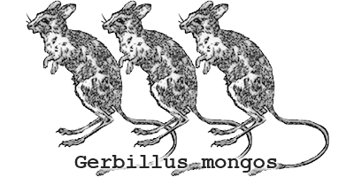

APIs Are Beautiful Things
A good design keeps end-users in mind to craft a first-rate user experience (UX): straightforward workflow, clutter reduction, beautiful and joyful to use, and thousands other good rules of thumb. A good API follows many of the same rules. But rather than buttons and graphs, it manifests itself as beautiful markup and unambiguous actions. APIs are UX for programmers.
We are in the midst of an overhaul, of sorts, to much of our internal and external codebase. We’ve replaced the gerbils who used to perform all of the MongoHQ work with an API (which wraps even smarter gerbils, but we’ll focus on the API for now). We wanted to ensure that we designed something we wanted to use, so these new systems all interacts through our new API. We are eating our own breakfast here, to make sure it’s tasty and healthful before serving you.
The new API isn’t ready for prime-time, yet. But it’s out there, and you’re welcome to take a look. This is still a VERY BETA product, so bear in mind we make changes and improvements all the time.
API Example
Unsolicited Example
Before digging into the API, let’s see what you can do with the MongoHQ REST API. David Knell created this cool MongoHQ client module for Appcelerator (mobiles devices). He doesn’t work for us, and we didn’t solicit him to do it. Check out his video:
Getting a Key
The API is simple to use. But you’ll first need a MongoHQ account (sadly, a database created through a PaaS like Heroku or AppFog won’t work–you’ll need to sign up). Log into the web application, and click on “My Account” in the upper right. There you’ll find your secret API key, also known as _apikey.
Creating a Database
You can find out what plans we offer by issuing a GET request to the /planspath. All api requests hit the https://api.mongohq.com endpoint. We’ll use curl for convenience, but you can use anything that issues an HTTP GET request. Just be sure to replace XXXXXXX with your own private API key (also, don’t let it fall into the wrong hands!).
curl -X GET "https://api.mongohq.com/plans?_apikey=XXXXXXX"
Once you’ve picked the plan you want, issue a POST to /databases to create a new one. You’ll need two JSON values: a name to give this database, and the type of plan you want (we’ll just pick free).
curl -X POST "https://api.mongohq.com/databases?_apikey=XXXXXXX"
-H 'Content-Type: application/json'
-d '{"name" : "test_db"}'
You can make up to 5 free databases this way in a single account–of course there’s no limit to how many larger plans you want to make.
Great Power
This was just a quick demo for making a new database through the MongoHQ API. If you read the docs, you can see how to create/query collections/documents/indexes, check invoices, view stats (for larger plans), and more.
As a reminder, this is a beta API, so keep that in mind before you bet the farm on it. Feel free to play around, and by all means, make suggestions. We love your feedback.